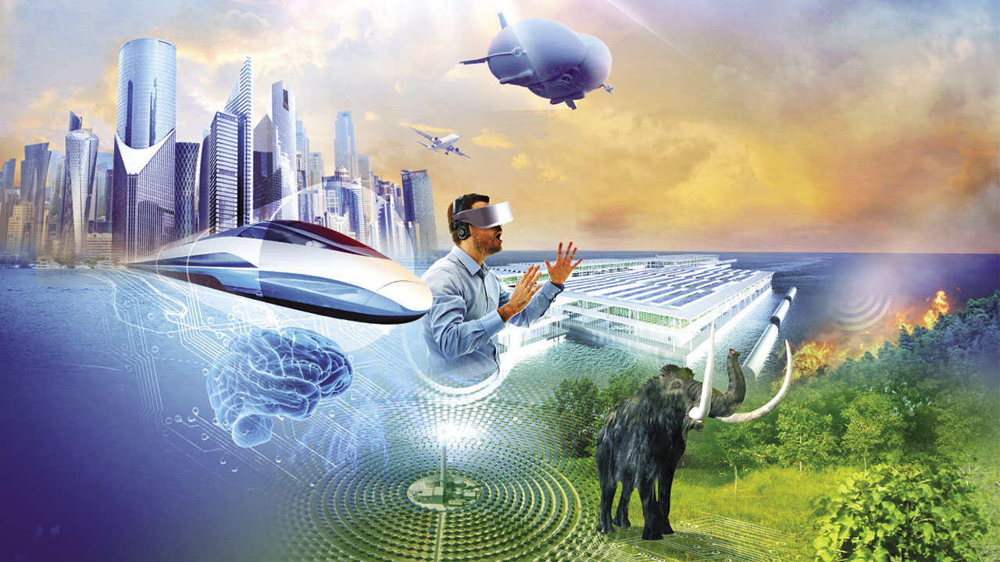

"One way we might see communication
change in the future is through augmented reality. In an augmented-reality system, you
view the world through a technological overlay. This could take the form of a hand-held
device like a smartphone -- there are several augmented-reality applications already available
for some phones. Another possible application is through a set of augmented-reality glasses.
In either case, you can view the world around you and see real-time digital information about
what you're viewing.
The classic example of augmented reality is the restaurant review.You couldstand in front of a restaurant and, through an augmented-reality system, read customer reviews or
view the daily specials without ever walking inside. But the applications don't have to stop with
locations.Augmented-reality systems might extend to people as well. Imagine looking at a stranger
and seeing that person's name, Facebook profile, Twitter handle and other information. Clearly,
augmented reality systems will raise concerns about privacy and safety, but such systems are already
in development."
The Past:
"In the late 1700′s and early 1800′s the first telegraph was invented. The
telegraph system was a form of communication that transmitted electric signals over wires from
different locations to translate messages. The first telegraph was invented by Claude Chappe in
1794, this telegraph was not electric, it was a “semaphores,or tall poles with movable arms, and
other signaling apparatus, set within physical sight of one another.” Many others tried to reinvent
and improve the way telegraphs worked. However, Samuel Morse was the only one who perfected it.
Morse took the significance of those facts found by previous inventors and invented a more practical
and commercial system."
Our Future:
"The advancement in technology like the Internet, computers
and tablets has changed the dynamics of the print industry tremendously. Newspaper,
Magazine, and Book circulation is at its lowest, the print industry is expected to
lose 25% of its jobs over the next few years. The print industry is drastically declining
because the Internet has and continues to shape the way we communicate. The future of print
is not very bright, in my opinion I do not believe that print will be a part of the future
because there will be no need for anything printed. While the print industry is suffering
it is predicted that applications like eBook, iBook, and audiobook are expected to increase
vastly. In a few years newspapers, books, and advertisements will all be created and made
only for online."
"Therefore, future technology should be more compatible with people’s needs; tablets
should be Nano sized, lite and slick, interactive, and portable. Users should be able to
explore endless possibilities from writing word documents to creating and designing websites.
Future tablets should be able to bend, fold, and roll while giving the user the experience of
reading a book or a magazine. Prospective tablets should allow users to browse the web, take
pictures, upload, and watch videos. Upcoming tablets should not take away people interacting
with each other but it should enhance people’s interaction globally. Upcoming tables should
translate different languages making it easy for users to communicate internationally."

"Analyzing the concept and processes of innovation is to make a distinction between
Revolutionary and Evolutionary Innovation."
"Companies and economies that rely on evolutionary innovation need to keep that innovation
coming at a rapid rate or they will get left behind by someone else’s innovations. Similarly,
no matter how quickly they may innovate in many small ways, evolutionary innovators are subject
to game changers from the revolutionary innovators."
"In the long run, businesses and economies probably benefit from having a combination of both
forms of innovation, which means having the social and economic infrastructure to support both."